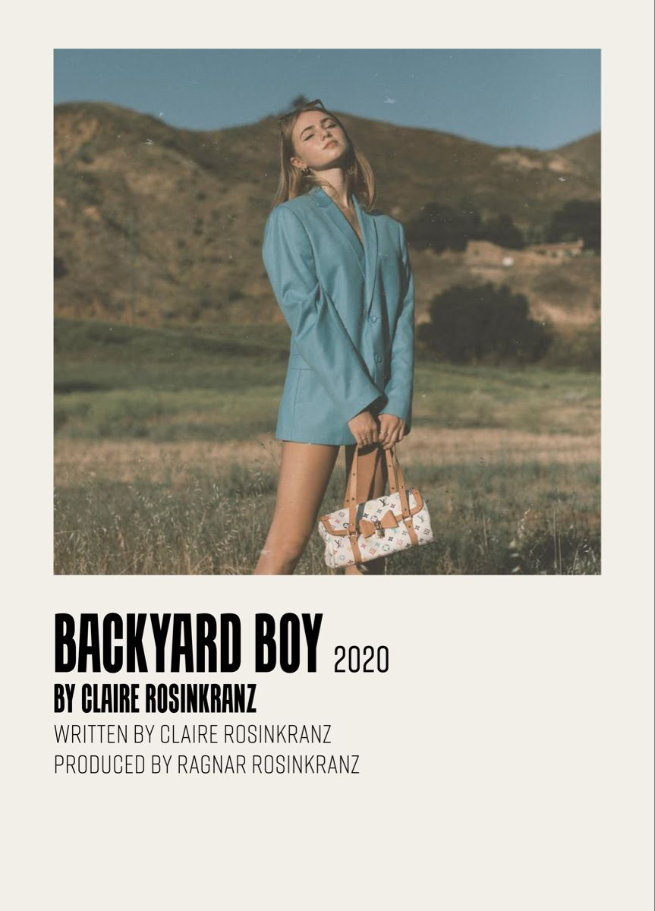
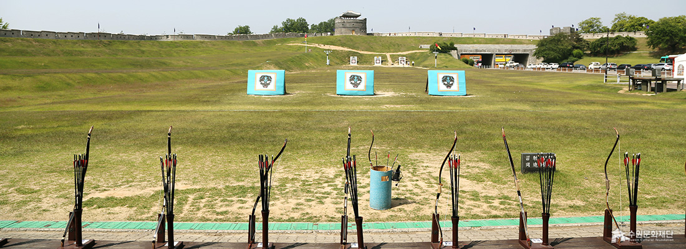

1. 좋아하는 것
Youtube(Korean) Youtube(Japan)
포켓몬스터(ポケットモンスター)는 닌텐도와 게임 프리크가 개발한 RPG형 게임과 그것에서 파생한 미디어 전체를 통틀어 이릅니다.
전 그 중에서도 nds게임, 특히 기라티나와 블랙, 블랙2버전을 즐겁게 플레이하곤 했습니다.
포켓몬의 종족 수는 총 898종으로 매우 방대하나, 피카츄를 가장 좋아합니다.
2. 요즘 즐겨듣는 노래
claire rosinkranz의 Backyard boy라는 곡입니다.
곡의 분위기가 밝고 따뜻하며, 가사가 귀여워 즐겨듣고 있습니다.
3. 취미
근 3년간 취미생활이라 할 수 있을법한 것을 하지 못했으나 이전까지 제 취미는 국궁이었습니다.
현을 당길 때에 드는 묵직함을 견디고 시를 발시할때 드는 상쾌함이 마음에 들었기 때문입니다.
중학교 3학년, 국술원선수권대회에 참가해 유급자 국궁부문에서 은메달을 거머쥔 경험이 있습니다.